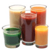
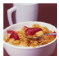
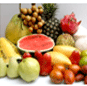
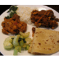
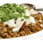
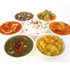

| Option | Early Morning | Breakfast | Mid Morning | Lunch | Evening | Dinner |
|  |  |  |  |  |  | |
| 1 | Walnuts | Oatmeal porridge (1%fat milk), Blueberries | Apple | Whole Wheat phulkas/Rotis (no oil/ghee), Purple cabbage and peas curry, Dal fry, Tomato Salad, Yogurt (fat free) | Green Tea | Whole Wheat phulkas/Rotis (no oil/ghee), Mixed Veg Sabzi, Sprouts salad, Buttermilk (chaach), Peach |
| 2 | 100% Grape Juice | Cucumber and tomato sandwich with mint chutney (Doule fibre bread) | Plum | Whole Wheat phulkas/Rotis (no oil/ghee), Alu methi, Dal palak, Green salad, Yogurt (fat free) | Tea (1% fat milk), Sprouted Moong Salad | Brown Rice, Beans sabzi/ palya, Fish curry (or Masoor dal), Cucumber raitha, Strawberries |
| 3 | Toasted sunflower seeds | Soy Idli, Sambar, Tomato chutney (no coconut) | Nectarine | Brown rice, Capsicum curry, Rajma curry, Steamed Asparagus, Mint raitha | Fruit chaat (no sev/papdi) | Whole wheat phulkas/Rotis (no oil/ghee), Carrot peas sabzi/palya, Tofu burji, Mixed Veg Salad, Blackberries |
| 4 | Green tea | Multi-grain cereal with flax seed, 1% fat milk, Strawberries | Raspberries | 100 % Whole wheat wrap, Grilled chicken, Steamed veggies, Yogurt (fat free) | Whole Wheat crackers | Mixed Vegetable Pulao (with brown rice), Channa masala, Mint raita, Cantaloupe |
| 5 | Herb tea | Double fibre bread, Egg white/ omelette, Orange | Walnuts | Mixed Veg soup, Whole Wheat rolls, Grilled Salmon, Tomato Salad, Buttermilk (low fat) | Carrot sticks, Hummus | Wheat Pasta with Vegetables, Grilled tofu, Corn and bean salad, Papaya |